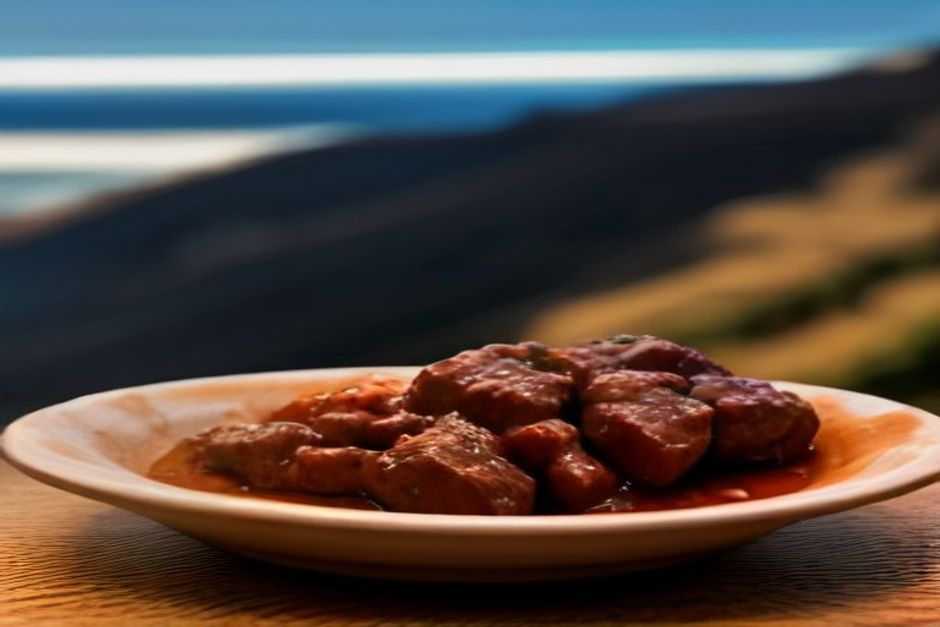
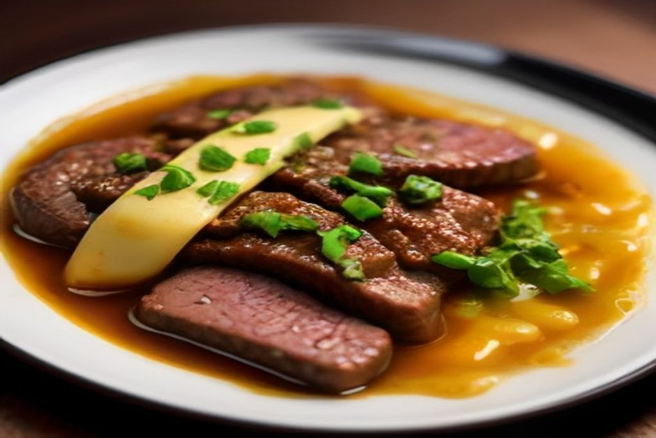

Se a Madeira vedete scritto "picado" sul menu e vi chiedete cosa state per ordinare, la risposta è semplice: una padella di manzo a cubetti, aglio, vino e patate fritte, da stuzzicare con gli stuzzicadenti. Eccovi cosa c'è dentro, come si ordina e dove vale la pena cercarlo.
Picado: cos'è, in due righe
Il picado è carne di manzo, di solito scamone o controfiletto, tagliata a pezzetti e saltata in padella molto calda con aglio, alloro, un po' di peperoncino e vino bianco. Alla fine arriva una spruzzata di limone. Il risultato è un sughetto scuro e profumato, che si porta in tavola ancora sfrigolante.
Il nome viene dal portoghese picado, "tagliato fine": parla proprio della dimensione dei pezzi. Accanto alla carne trovate patate fritte a cubetti e, sul tavolo, una scatolina di stuzzicadenti. Niente coltello e forchetta: si infilza un cubetto e si mangia.
Se cercate un paragone italiano, pensate a un antipasto da osteria più che a un secondo. Non è uno spezzatino e non è una tagliata: è un piatto da dividere, da mangiare chiacchierando.
Cosa c'è davvero nel piatto
La base è corta: manzo, tanto aglio, alloro, peperoncino fresco o secco, sale e un vino che si riduce in padella. Il vino è quasi sempre bianco, a volte è lo stesso vino di Madeira. Qualcuno chiude con un po' di burro per dare lucentezza, qualcuno versa il fondo di cottura direttamente sulle patate.
Il picado arriva sempre con due salse a parte: senape gialla e una ciotolina di piri-piri. Così il piccante lo dosate voi. Il piatto in sé è delicato: il peperoncino in padella dà calore di fondo, non fuoco.
Spesso c'è anche del pane sul tavolo. Tenetene un pezzo per la fine, per raccogliere l'aglio e il vino rimasti nella padella. Molti dicono che sia la parte migliore.
Picado o espetada: non sono la stessa cosa
È la confusione più comune, perché sono i due piatti di manzo di Madeira. Conviene tenerli separati.
- Espetada: pezzi di manzo grandi su un lungo bastoncino di alloro, grigliati su brace e serviti appesi sopra il piatto. È il pasto principale, di solito con bolo do caco e patatine.
- Picado: pezzi piccoli, cotti in padella, con salsa, da dividere in mezzo al tavolo con gli stuzzicadenti.
In pratica, l'espetada la ordinate come pranzo o cena. Il picado arriva insieme a una poncha, mentre state ancora decidendo cos'altro prendere. Se il gruppo è piccolo, può diventare la cena stessa.

Dove mangiare il picado a Madeira
Il riferimento è Câmara de Lobos. Le piccole tascas del villaggio di pescatori, vicino al porto, servono il picado insieme alla poncha da generazioni. Chi è del posto lo ordina spesso senza nemmeno aprire il menu.
A Funchal guardate nella sezione petiscos o "para partilhar" (da condividere), non tra i piatti principali. Le strade più antiche, intorno alla Zona Velha, sono un buon punto di partenza. Più prudenti, invece, con i locali sul lungomare pensati soprattutto per i turisti.
Ogni tasca ha le sue proporzioni di aglio e vino, e la differenza tra un picado buono e uno dimenticabile sta tutta in quel sugo di padella. Chiedete a chi vi ospita o a chi lavora dove alloggiate: di solito ha un posto preferito.
Come ordinarlo e mangiarlo senza sbagliare
- Ordinatelo da condividere. Una padella ogni due o tre persone è la misura normale, magari con una poncha o una caraffa di vino della casa.
- Usate gli stuzzicadenti. Infilzate un cubetto di manzo, passatelo nella senape o nel piri-piri a piacere, poi prendete un cubetto di patata dallo stesso piatto.
- Non abbiate fretta. È un piatto da conversazione: funziona proprio perché si mangia piano.
- Chiudete col pane nel sugo rimasto.
Perché si mangia così: un po' di storia
Il picado viene dalla cultura delle tascas, i piccoli locali di famiglia attorno a Câmara de Lobos e nelle vie vecchie di Funchal, dove si mangia per accompagnare un bicchiere più che per un pasto formale.
A Madeira il manzo è sempre stato un po' raro e prezioso: i terrazzamenti ripidi dell'isola vanno bene per banane, canna da zucchero e vigne, meno per i pascoli. Tagliare la carne piccola e allungarla con aglio, vino e patate la faceva bastare di più, senza smettere di sembrare una festa. Se l'espetada era il cibo delle grandi occasioni, il picado era quello di una serata al bar.
Come si prepara il picado a casa
Si può rifare senza attrezzi speciali: serve soprattutto una padella molto calda.
- Tagliate a cubetti di circa 2 cm uno scamone o un controfiletto di buona qualità.
- Rosolateli forte e in fretta in olio d'oliva con molto aglio schiacciato, una foglia di alloro e un peperoncino a fettine.
- Sfumate con un bicchierino di vino bianco secco e lasciate ridurre per un minuto.
- Finite con una spruzzata di limone.
Portate subito in tavola, con patate fritte o al forno a cubetti, senape e piri-piri a parte. Il manzo stracuoce in fretta appena esce dal fuoco, quindi il picado va mangiato entro un minuto o due.
Prima o dopo il picado: il mare
Madeira si capisce anche dall'acqua, e il ritmo è lo stesso: tranquillo e senza fretta. Se avete qualche ora libera, un'uscita privata con noi parte da Marina do Funchal, Pontile C. La barca è per un solo gruppo, fino a 5 persone, con due skipper abilitati di Madeira. Cibo e bevande a bordo sono compresi.
La gita di giorno parte alle 10:00 o alle 14:00 e tocca Câmara de Lobos e Cabo Girão, con bagno e paddle board a Fajã dos Padres. Costa 500 € per tutta la barca (2 h 30 fino a Ribeira Brava), non a persona. Preferite la sera? Il tramonto in barca parte 1 h 15 prima del tramonto, tutto l'anno, da 400 €. Trovate tutte le uscite nella pagina esperienze, e la cancellazione è gratuita fino a 24 ore prima della partenza.

L'espetada è il piatto attorno a cui si organizza un pasto. Il picado è quello che lo fa cominciare.
Se a Madeira c'è un piatto che i locali non saltano mai, è questo: piccolo, aglioso e, di solito, il primo a svuotarsi in tavola.